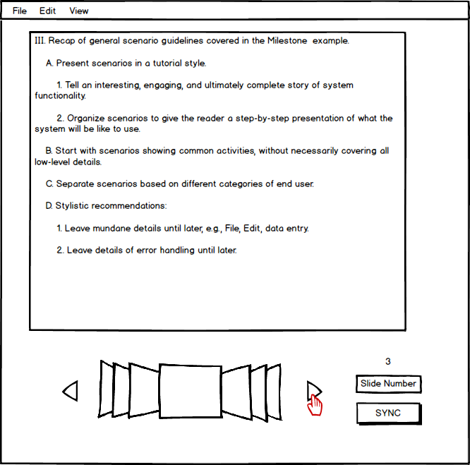
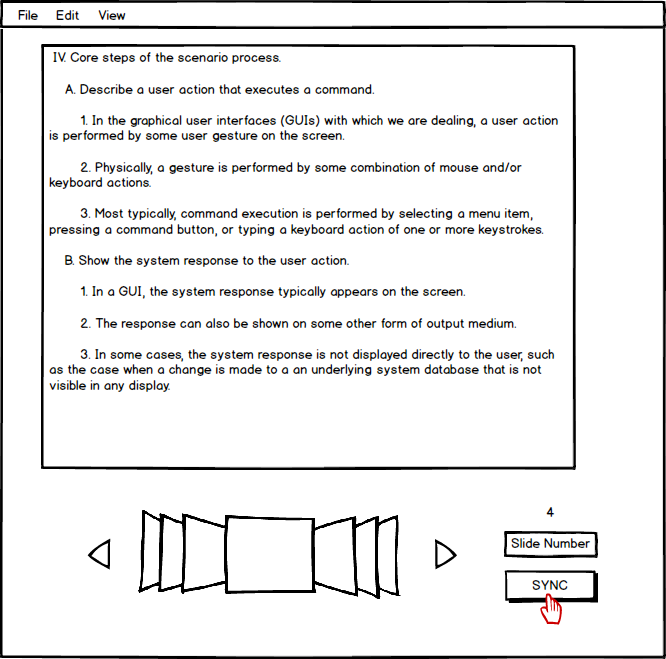
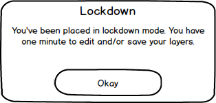
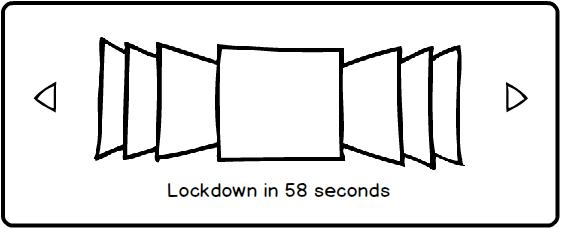
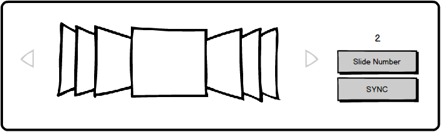

Navigating between slides for students is nearly identical to navigating between slides for a presenter. Notably, students can move back a slide or view the next slide by using the navigation arrows. They can also enter a slide number and jump to the specified slide. The main difference is that students navigate privately while the presenter navigates publicly. The presenter navigating page provides further detail on the overall navigation functionality.
The standard student whiteboard and navigation view is shown in Figure 1.

Figure 1: The student navigation view.
As mentioned before, the student navigation controls are nearly identical to that of the presenter. However, there is one difference that is shown in Figure 1. Since students navigate privately and are not always on the same slide as the presenter, the EClass provides the 'SYNC' button which will be explained shortly.
Figure 2 shows the change that occurs when the student moves on to the next slide (independent of the presenter's current slide).

Figure 2: Independent slide change.
The student is presented with the next slide of lecture content and the shown slide number increases accordingly. The student is able to continue looking ahead in the slides, go back to previous slides, sync up with the presenter, or manually enter the desired slide number. A student presses the 'SYNC' button to go straight to the slide the presenter is on. If the student is already synced with the presenter, the EClass makes no change to the current slide. In the example shown by Figure 2, the student returns to slide 3 after pressing the 'SYNC' button.
Another difference for student navigation is related to permissions. Students who have the "Lockdown" permission level described on the permissions page are not allowed to navigate between slides. The EClass notifies students when they have been placed in "Lockdown".
Figure 3 shows the lockdown notification dialog.

Figure 3: The lockdown notification dialog.
This dialog informs the student that he or she has been placed in "Lockdown" as soon as the presenter applies the permission change. The notification includes a time limit that lets the student know how long he or she has before independent slide navigation is disabled. This time limit gives the student time to finish making any necessary layer changes before being locked out from all whiteboard abilities.
When the student closes the dialog, the timer is displayed below the slide navigation buttons. Figure 4 shows the lockdown timer.

Figure 4: The lockdown timer.
The timer shown in Figure 4 continues to count down to zero while the student saves his or her notes. Once the timer reaches zero, it disappears. The student is automatically synced with the presenter and all forms of slide navigation are disabled. The student is given visual cues to indicate that navigation is fully disabled.
Figure 5 shows the visual effects on navigation functions during lockdown.

Figure 5: The visual effects of lockdown.
The EClass displays each of the interactive navigation items and buttons with a grey outline or overlay to indicate that they are disabled. Clicking on the buttons does not result in any system action.